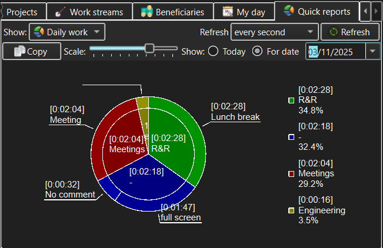

The Quick Reports view is where user can see a brief report on a short and fast summary of some aspect if the user's working day.

The Quick Report view itself defines the topmost row of controls, which include:
Any other controls are specific to the Quick Report type. For example, the Daily Work Quick Report allows the user to choose a date for which to display activity statistics, to scale the resulting chart and to copy the chart to clipboard as a picture in order to later paste it into some document.
Note that Quick Reports, by design, do not change the workspace they are created from in any way. In addition, they are specific to the currently logged in user and only include information that the user will be able to see in some other e.g. view.
See also: -